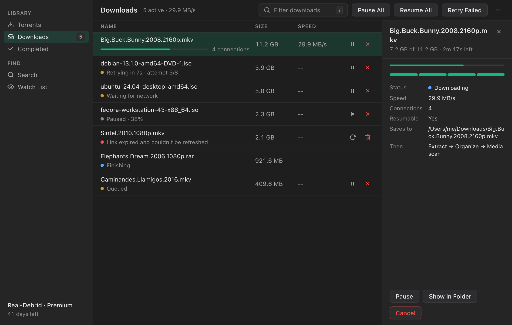
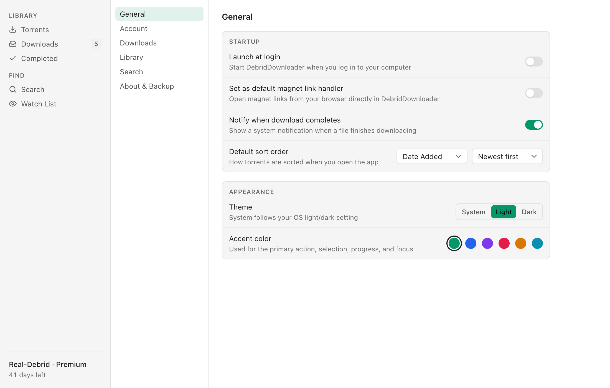
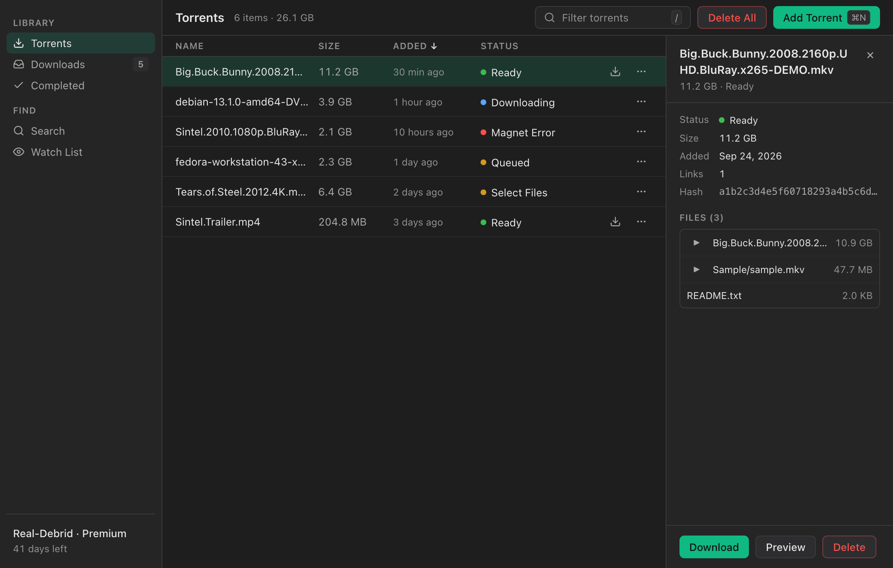

A desktop downloader for Real-Debrid, TorBox, and Premiumize.
Free and open source. Resumable multi-connection downloads, a native interface in light or dark, and your tokens stay in your OS keychain.

Features
Built to finish the download.
Add a magnet or a .torrent file, let your debrid service fetch it, and DebridDownloader brings it home, even when your connection doesn't cooperate.
Downloads that don't start over
Each file downloads over several connections at once, up to 16. Progress is saved to disk as it goes.
- Resumes after dropped connections, restarts, and crashes
- Expired links refresh automatically
- Waits for the network to come back instead of failing
- One speed limit and one concurrency limit across everything
Light, dark, or your system
A quiet, native-feeling interface on macOS, Windows, and Linux. It follows your system appearance by default, with six accent colors if you want one.
Settings are organized into sections instead of one long page.

Built for the keyboard
Everything common has a shortcut, with ⌘ on macOS and Ctrl on Windows and Linux.
- ⌘ K search, ⌘ N add a torrent
- 1–4 switch views, / filter
- ↑ ↓ select, Space pause or resume

Also included
The rest of what a debrid setup usually needs, without extra tools.
- Tracker searchTorznab, Prowlarr, and Jackett, with a check for what's already cached.
- Watch listRules that find new releases and add or notify automatically.
- Extract and organizeArchives unpack on their own; movies and shows are sorted into your library folders.
- Media serversPlex, Jellyfin, and Emby rescan when a download finishes.
- rclone destinationsSend files straight to a cloud remote.
- Magnet linksSet it as your default handler and links open straight in the app.
- Keychain storageTokens live in macOS Keychain, Windows Credential Manager, or Secret Service.
- Signed buildsmacOS builds are signed and notarized; updates install from inside the app.
What's new
Version 1.7.0
September 2026- A new download engine: multiple connections per file, and downloads that resume after drops, restarts, and crashes
- Expired links refresh automatically; offline downloads wait for the network
- Pause, resume, and retry, for one download or all of them
- A redesigned interface with System, Light, and Dark mode
- Keyboard shortcuts on every platform
- Plain-language error messages from Real-Debrid, TorBox, and Premiumize
- Closing the window keeps downloads running in the tray
Download
Get DebridDownloader
Free. You'll need a Real-Debrid, TorBox, or Premiumize account.
| macOSApple Silicon · macOS 11 or later | .dmg |
|---|---|
| WindowsWindows 10 or later | x64 installer ARM64 installer |
| Linuxx64 and ARM64 | .deb (x64) AppImage (x64) .deb (ARM64) AppImage (ARM64) |
Also available as .rpm, and on the GitHub releases page.